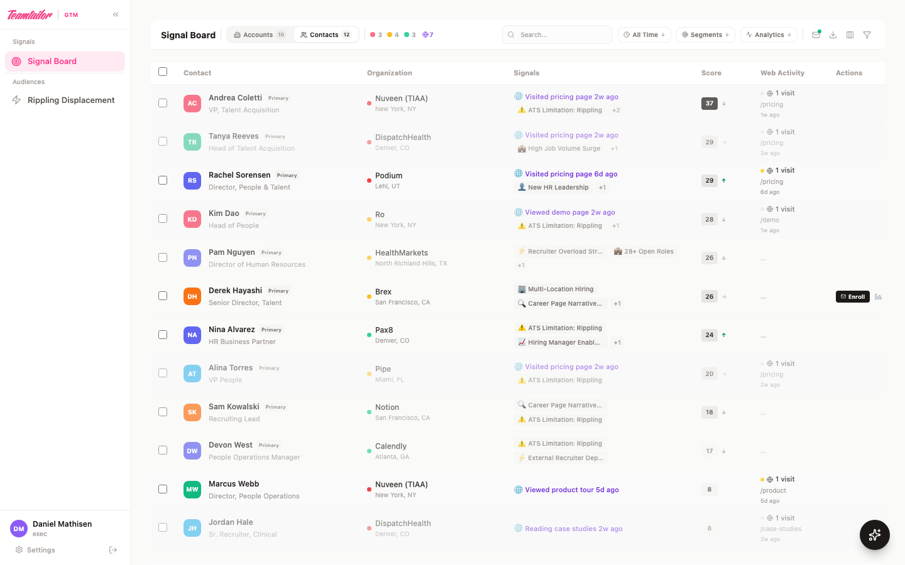
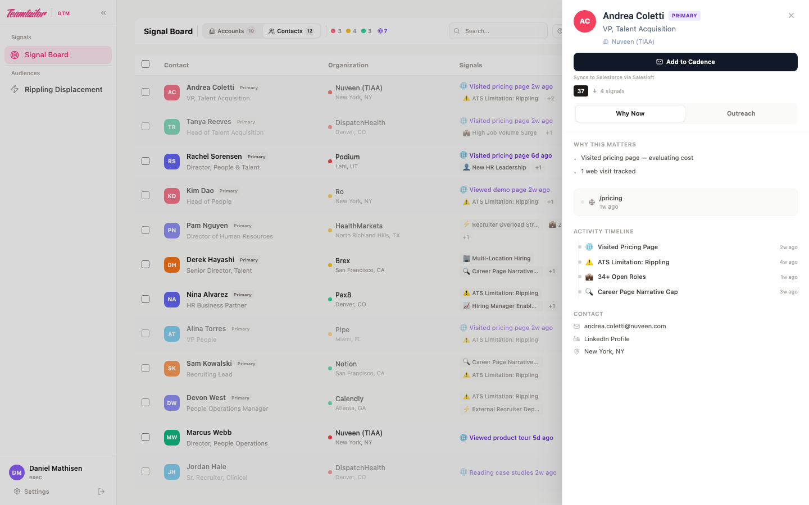
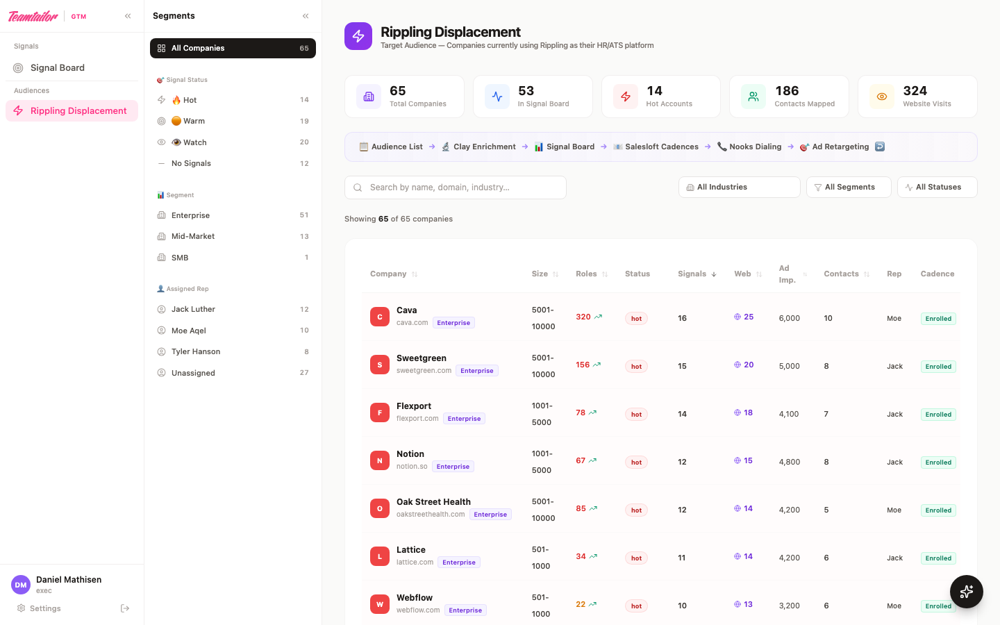
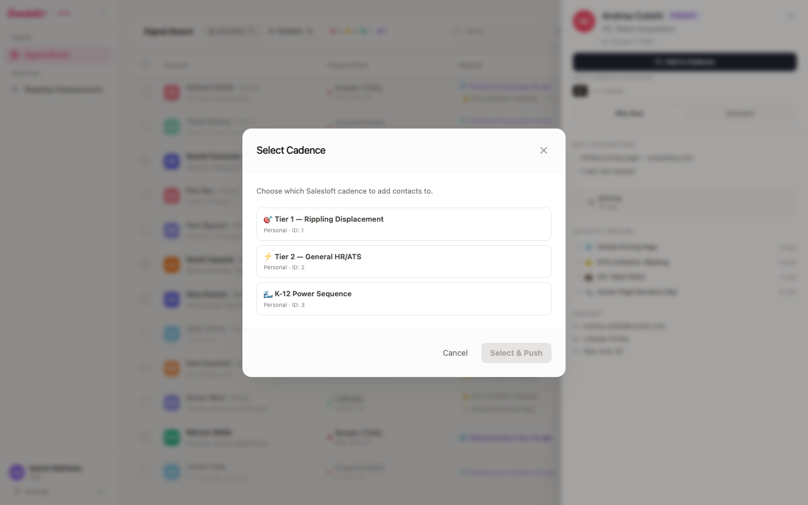
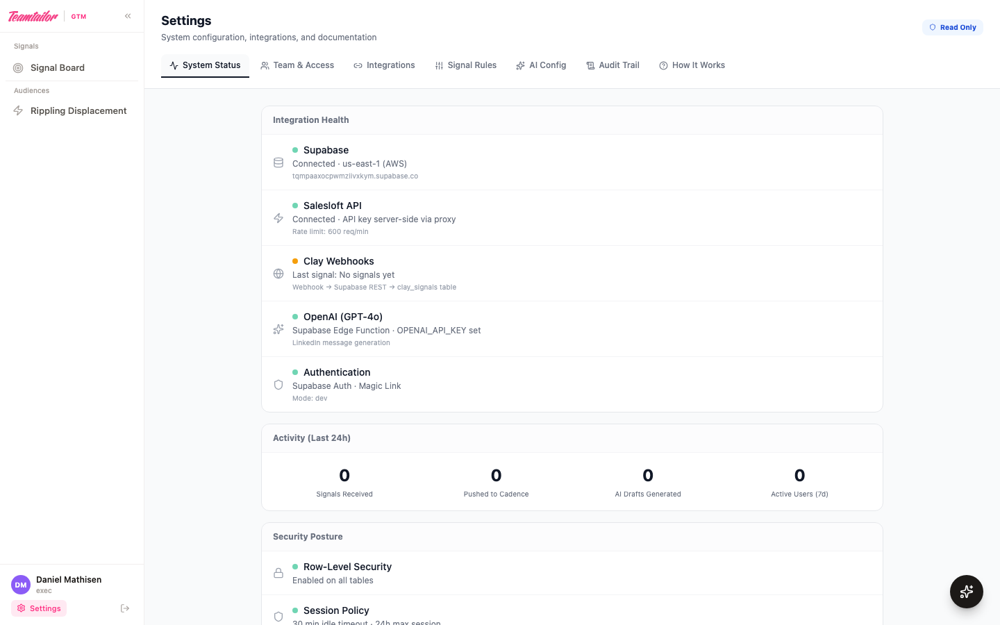

Teamtailor GTM Workspace
Teamtailor US — Built by Ryan Walker
What We Cover
- 01The Problem — Why Salesforce bandwidth forced a workaround
- 02The Signal Board — How signals flow in, how AEs see and act on them
- 03The Audience Flywheel — How audience lists feed Clay, which feeds the Signal Board
- 04The Full Pipeline — Clay → Supabase → Signal Board → Salesloft → Nooks
- 05The Daily Workflow — From signal detection to immediate execution
- 06Configuration & Oversight — Settings, team access, and admin tools
- 07Security & Compliance — Policy alignment with every Teamtailor document
Why This Exists
The Reality
- Salesforce admin bandwidth is shared across the global org
- CRM customization is queued behind global priorities
- Even with Salesforce, surfacing signals there doesn't help AEs act fast
- AEs need one screen where they see what's hot and can act immediately
What We Built
- A dedicated GTM Engineering Extension to Salesforce — designed to help the team move fast now, while informing exactly what RevOps should build into the CRM later
- Clay processes our target audiences, detects buying signals (e.g., job postings, ATS contracts expiring, new TA leadership), and enriches both accounts and contacts
- AEs see prioritized accounts with AI-generated research briefs
- One-click push to Salesloft cadences → Nooks for power dialing
- Jesper's ad audiences (LinkedIn, Meta) feed back into the same pipeline, creating a feedback loop
- Future-Proofed Architecture: Because this data pipeline is powered by standard webhooks, we aren't permanently locked into this standalone dashboard. Once RevOps builds out the required custom objects in Salesforce, migrating the intelligence is straightforward. We simply redirect the Clay webhook payloads directly into the CRM, retiring the database without losing signal data.
The Signal Board
The nerve center. Every account is scored, ranked, and assigned to an AE — automatically.
What AEs See & Do
Every account ranked by composite intent score. Hot signals surface first.
What AEs See
- Accounts ranked by composite intent score — hottest signals first
- ICP tier badges (🔴 Hot / 🟡 Warm / ⚪ Watch) with color-coded priority
- Audience source badge showing origin (Rippling)
- Key columns: employee count, open roles, current ATS, last signal date
- Primary contact with title, email, and LinkedIn profile
- Salesloft activity inline — emails sent, calls made, replies received
- ISP Score (0–100) with AI-generated account intelligence on hover
What AEs Can Do
- Open the Account Drawer — full research brief, pain points, recommended approach
- Push contacts to Salesloft cadences — real cadences pulled via API
- Set dispositions: New → Working → Engaged → Meeting Set → DQ
- Add team-visible notes to any account
- Export signal data to CSV

The Signal Taxonomy
A 64-signal framework across 28 categories defines what the system looks for. Each signal has a weight (1–10) indicating buying intent strength.
Weight 10 (Critical)
- Legacy ATS (Taleo, iCIMS)
- Recruiter Overload Stress
- Broken Application UX
- Manual Hiring Workflows
- RFP / Vendor Review
Weight 8–9 (Strong)
- New Head of TA / CHRO
- M&A / Org Restructure
- Multi-Location Hiring
- Regulated Roles
- High Job Volume Surge
Weight 5–7 (Moderate)
- External Recruiter Dependency
- Contract Renewal Windows
- Career Page Narrative Gap
- Hiring Manager Enablement
Weight 1–4 (Soft)
- Language Shift to Systems
- ESG Workforce Emphasis
- Public eNPS Mentions
- DEI Claims Without UX
64
Total Signals
28
Categories
4
Weight Tiers
These signals map directly to Clay's detection columns. Clay identifies them automatically across the web — the Teamtailor GTM Workspace ranks and presents the results.
ISP Enrichment — The Account Drawer
When Clay enriches an account, the system produces a full sales playbook. AEs see everything they need before picking up the phone.
ISP Score (0–100)
- Clay's AI computes a holistic account-level score
- Displayed as a color-coded gauge bar in the account drawer
- ≥60 = high priority (red), ≥40 = moderate (amber), <40 = lower (green)
- Signal category badge shows which cluster dominates
- ISP explanation paragraph describes why the score is what it is
Pain Points + Account Intel
- 5 intelligence bullets — company scale, infrastructure, market position
- 4 tailored discovery questions specific to this account
- Example: "With 47+ open roles and 155 schools, how much productivity is lost to slow time-to-fill?"
- AEs read these before the call — preliminary research provided for them
Recommended Approach
- How to position Teamtailor for this specific prospect
- Who to target (stakeholder recommendation)
- Specific CTA suggestion (e.g., "15-min Recruitment Process Audit")
- Employer review scores (Glassdoor, Indeed, G2) at a glance
- Everything is AI-generated by Clay — evolves as Clay learns

The Audience Flywheel
Audience lists feed Clay. Clay detects signals. Signals drive action. Action generates more signals.
How the Flywheel Works
• Antigravity Python Scrapers
• TheirStack / Custom CSVs
Receive from Clay (Inbound)
• RB2B Web Visitors
• Clay Native Signal Detection
By building the engine this way, we can plug any audience (e.g. Rippling displacement) into the top, and the workflow takes care of the rest.
How the tools connect (in plain terms): Think of webhooks like automated text messages between our platforms. When Clay finds a hot lead, it automatically sends data to the Signal Board to show it to the AE. When the AE clicks 'Push', the board triggers Salesloft to start the email sequence. No manual data entry, just tools talking to each other programmatically.
Audience Alignment Calendar
The GTM Workspace is fed by a centralized campaign calendar. Every 4 weeks, a new highly-qualified list is injected into the top of the pipeline for Clay to enrich and AEs to execute against.
ADP Displacement
Live campaign
Rippling Displacement
Talk track: End of Q2 renewal cycles
Dayforce Displacement
Preparation for fall hiring surge
HiBob Displacement
Targeting mid-market scaling orgs
School Districts (ASPA Focus)
Aligning with ASPA Conference in Oct. Focus on historical win areas (CA, KS).
BambooHR Displacement
End of year strategic review push.
Backlog / Strategic Flex
35-Day Campaign Execution SLA
Executive Analytics & Campaign Tracking
Example: Rippling Displacement. The Audience View aggregates campaign-level data in real-time. The top of the page provides a unified campaign funnel, tracking progression from total accounts and key contacts sourced, down to cadence enrollments, inbound web visits (via RB2B), and meetings booked. This provides visibility without requiring custom CRM report builds.

The Full Pipeline
From raw signal detection to booked meeting — end to end.
Technical Architecture
 Supabase
Supabase Salesloft
Salesloft Salesforce
SalesforceHow data moves through the system — from webhook to phone call.
Supabase: SOC 2 Type II Certified
 Railway: SOC 2 Type II Certified
Railway: SOC 2 Type II Certified
Piping in Contact & Account-Level Intent
We pipe in both contact-level and account-level intent signals directly from Clay. Every time an enrichment table row completes, Clay fires a webhook containing the full payload below.
| Field | Source | Example |
|---|---|---|
| company_name | Clay enrichment | Nuveen Investments |
| audience_source | Clay enrichment | Rippling |
| full_name / email | Clay waterfall | Sarah Chen / s.chen@nuveen.com |
| current_ats | Clay enrichment | Greenhouse |
| signal_level | Clay / RB2B | Contact-level (Deanonymized) |
| signal_name / signal_score | Clay trigger | Pricing Page Visit / 10 |
| icp_tier | Clay formula | hot / warm / watch |
| ai_research_brief | Clay AI column | "Actively evaluating ATS alternatives..." |
| assigned_ae_id | Clay round-robin | ae-jl (Jack Luther) |
| isp_score | Clay ISP model | 67 (0–100 scale) |
| account_intel | Clay AI column | ["5,000 employees", "Taleo user", ...] |
| pain_points | Clay AI column | ["How is the current ATS handling volume..."] |
| recommended_approach | Clay AI column | ["Position as modern replacement for Taleo..."] |
Webhook URL: https://[project].supabase.co/rest/v1/clay_signals
Key point: Clay does the intelligence, the app does the visualization
ICP tier, signal score, and research briefs are all computed by Clay. Crucially, the app automatically associates contact-level intent (like RB2B web deanonymization) with account-level intent (like job postings) and organizes them under a single unified company view for the rep.
How the Activity Feed works (in plain terms): Clay sends both AI-generated insights (like "ATS Limitation: Rippling") and raw contact-level intent signals (like "Visited Pricing Page") to our database as a simple list with timestamps. Our app takes that list and formats it into a chronological Activity Timeline. This allows the AE to quickly see the entire story of the contact's intent and the account's context in one unified feed.
Signal Board → Salesloft → Nooks
When an AE clicks "Push to Cadence," the system enrolls the contact and tracks all downstream activity.
Salesloft Push Flow
- Step 1: Find or create the Person in Salesloft by email
- Step 2: AE selects from their available cadences
- Step 3: API call to create a CadenceMembership
- Step 4: UI updates to show ✅ status
- Step 5: Action logged to audit trail
Nooks Execution
- Contacts in Salesloft cadences sync to Nooks for dialing
- AEs power-dial from their Salesloft queue in Nooks
- Activity flows back: emails sent, calls, replies, meetings
- Signal Board shows Salesloft activity inline per contact
- Disposition updates in real-time as AEs work accounts
🔄 Salesforce Activity Sync
Because we push contacts directly into Salesloft, and AEs dial via Nooks (which writes back to Salesloft), every single email, call, and meeting disposition natively syncs to Salesforce via Salesloft's existing CRM integration. The GTM Workspace simply pulls that data back via API to visualize it on the Signal Board. RevOps loses zero visibility.
Push to Cadence — Live
Clicking "Add to Cadence" opens a list of available Salesloft cadences pulled via API. Selecting a cadence enrolls the contact into that cadence directly.

Salesloft API — Exactly What We Access
Full transparency: every API endpoint, its method, and what data moves. No hidden access.
| Endpoint | Method | Direction | Purpose |
|---|---|---|---|
/v2/people.json?email= |
GET | 📥 READ | Look up a person by email — check if contact exists before creating |
/v2/people.json |
POST | 📤 WRITE | Create new person (name, email, title, phone, company) if not found |
/v2/people/{id}.json |
PATCH | 📤 WRITE | Update contact stage to "Working" after cadence enrollment |
/v2/cadences.json |
GET | 📥 READ | List available cadences for the cadence picker dropdown |
/v2/cadence_memberships.json |
POST | 📤 WRITE | Enroll a person into a selected cadence (the core "Push to Cadence" action) |
/v2/activities/emails.json |
GET | 📥 READ | Pull email activity — sent count, opens, replies, bounces |
/v2/activities/calls.json |
GET | 📥 READ | Pull call activity — dials, duration, disposition, sentiment |
/v2/meetings.json |
GET | 📥 READ | Pull booked meetings per person (used for funnel metrics) |
🔒 Security Model
API key stored server-side only. Browser calls /salesloft-api/* → server proxy injects Authorization: Bearer header. Key never reaches the client.
📊 Summary: 5 READ / 3 WRITE
Writes are limited to: create person, update stage, enroll in cadence. We never delete, modify cadence content, or access admin settings.
How the integration works (in plain terms): Think of the GTM Workspace as a specialized remote control for Salesloft. When a rep clicks 'Add to Cadence' here, it's exactly the same as if they logged into Salesloft and clicked it themselves. However, we only gave the remote control specific buttons—it physically cannot delete data, alter emails, or change admin settings.
How AEs Work
Signal → Research → Draft → Cadence → Nooks → Meeting.
Signal → Research → Enroll → Dial
Every morning. Zero context switching required.
or Contact
OLD WAY
Manual research → write email → build Nooks list → hope for the best → 15+ min per prospect
WITH GTM WORKSPACE
Open Signal Board → Read AI brief → Push to cadence → Power dial → efficient execution
Configuration & Oversight
A full Settings dashboard for monitoring, troubleshooting, and team management.
The Settings Dashboard
Seven tabs covering everything from system health to role-based documentation. Exec users see all tabs in read-only mode.

System Status
Real-time health of every integration (Supabase, Salesloft, Clay). Activity metrics for last 24 hours.
Signal Rules
Score thresholds, ISP scoring model, the full 64-signal taxonomy with weights, freshness indicators, and automation rules.
How It Works
Role-specific documentation for each team member. Each role sees documentation tailored to their function — admins see technical details, execs see plain-English overviews.
Team & Access
Eight authorized users across three roles. Every login uses a @teamtailor.com email via magic link (passwordless). No shared accounts.
| User | Role | Context | Visibility |
|---|---|---|---|
| Ryan Walker | Admin | Platform Administrator | All territories · All features · Impersonate any user |
| Brian McGarry | Exec | GM, North America | Signal Board (all territories, read-only) · Settings |
| Daniel Mathisen | Admin | Corporate Development, Clay Owner | All territories · Signal Rules · Integration Settings |
| Gordon French | Exec | RevOps, North America | Signal Board (all territories, read-only) · Settings |
| Jesper Åström | Exec | Growth Marketing, Website & Ads | Signal Board (all territories, read-only) · Settings |
| Jack Luther | AE | Account Executive | Own territory only · Push to cadence · Notes |
| Moe Aqel | AE | Account Executive | Own territory only · Push to cadence · Notes |
| Tyler Hanson | AE | Account Executive | Own territory only · Push to cadence · Notes |
| Katy Shelman | AE | Account Executive | Own territory only · Push to cadence · Notes |
Every user is hardcoded to a whitelist — there is no self-registration. Adding a new user requires a code deploy.
Data Isolation & Admin Controls
Every row of data is assigned to a specific AE. The system enforces who can see what at the code level — not just UI-level hiding.
🧑💼 Full AE Empowerment
- Complete Operational Access — Account Executives have the keys to the engine. They can push to cadence, track signals, and disposition accounts.
- No Arbitrary Gatekeeping — AEs are provided with all the data they need to close deals, with everything rolling up to the account level for full context.
- Total Focus — Every AE only sees their specific territory, preventing noise from other regions and allowing absolute focus on their pipeline.
🛡️ Secure Compartmentalization
- Strict Data Isolation — Account Executives cannot see each other's accounts. This isolation happens securely at the database level, not just hidden in the UI.
- Audit Trail Integrity — Every action taken on the platform is attributed to the AE. The audit trail immutably tracks who pushed to cadence, when, and how.
- Admin Support — System administrators can view all territories to monitor overall pipeline health and troubleshoot, but data never leaks laterally between AEs.
🔒 How Isolation Works Under the Hood
Every signal row in the database has an assigned_ae_id field. When an Account Executive logs in, the board securely filters to only show rows matching their ID. This happens in the database before rendering — the data never reaches the browser for accounts that don't belong to them. Contact-level activity rolls up to the account level automatically, giving the AE full context on the company.
In plain terms: Every rep has their own locked digital vault. Even though all the data lives in one database, the system physically blocks Jack from seeing Moe's accounts, and vice-versa. Only leadership and Admins have the master key.
Security & Compliance
Policy-by-policy alignment with every Teamtailor internal security document.
Security Architecture
🔐 Authentication
- Supabase Auth with Magic Link login
- Passwordless — no credentials stored
- 30-minute idle session timeout
- 24-hour max session expiry
- Only @teamtailor.com emails whitelisted
🛡️ Authorization (RBAC)
- Row-Level Security on ALL database tables
- Role-based policies: Admin / Exec / AE
- AEs can only see their own territory data
- Insert-only audit logs (no tampering)
📋 Audit Trail
- Every action logged immutably
- Login, logout, idle timeout tracked
- Push-to-cadence events captured
- Disposition changes timestamped
- Viewable in Settings → Audit Trail tab
What Teamtailor Requires → What We Did
Every internal policy requirement mapped to how it is addressed. No jargon — just what the rules say and what is built.
| What Teamtailor asks | Why it matters | What we did | Status |
|---|---|---|---|
| "Get new vendors approved" | Prevents unauthorized tools | Vendor forms ready for Cakewalk App Catalog | 📝 Ready |
| "Log who did what and when" | Audit trail | Immutable audit_logs table |
✅ Done |
| "Only let people see data they need" | Least-privilege | Row-Level Security on every table | ✅ Done |
| "Use unique logins, no shared passwords" | Traceability | Magic link auth, unique @teamtailor.com | ✅ Done |
| "Store secrets securely" | Prevents exposure | API keys server-side + Supabase Vault | ✅ Done |
| "Don't keep data longer than needed" | Minimizes risk | 90-day auto-purge on signal data | ✅ Done |
| "Disclose AI tool usage" | Transparency | Disclosure drafted for CISO | 📝 Ready |
| "Register new systems" | Company awareness | System register entry drafted | 📝 Ready |
| "Have a continuity plan" | Business continuity | RPO 24h / RTO 1h, fallbacks defined | ✅ Done |
| "Assess and document risks" | Risk management | 10 risks scored, all ≤ 2.0 severity | ✅ Done |
Data Classification & Account Ownership
What Data We Handle
- US business contact data only — name, email, title, company, phone
- No EU data subjects — US prospecting only
- No candidate PII — no job application data
- 90-day auto-purge on signal data (pipeline data retained per commission cycle)
- Classification: Internal Confidential
Account Ownership
| Service | Owner | Auth | Location |
|---|---|---|---|
| Supabase | ryan.walker@teamtailor.com | Corp email | AWS us-east (SOC 2) |
| Railway | ryan.walker@teamtailor.com | Corp email | SOC 2 |
| Clay | Teamtailor license (Daniel) | Corp SSO | SOC 2 |
| Salesloft | Teamtailor org | Corp SSO | Existing infra |
✅ Every service uses Teamtailor's existing org or a dedicated @teamtailor.com account. Zero personal accounts.
Deployment & Next Steps
Everything needed to get fully operational.
The Full Stack
Frontend
React + TypeScript
Vite build system
Tailwind CSS
Framer Motion animations
Lucide icons
Backend
Supabase (PostgreSQL)
Row-Level Security
Edge Functions (Deno)
Magic Link Auth
REST API
Integrations
Clay — Enrichment + Webhooks
Salesloft — Cadence API
Nooks — Power Dialing (via Salesloft)
Hosting
Railway (SOC 2 Type II)
Auto-deploy from GitHub
Custom domain ready
Operating Costs & ROI
The workspace operates with near-zero infrastructure costs, and the pipeline architecture explicitly protects our Clay enrichment budget.
💰 Near-Zero Infrastructure Cost
- Supabase (Database + Auth): ~$25/month for the Pro tier. Handles all storage, edge functions, and real-time syncing.
- Railway (Hosting): ~$10/month based on usage. Hosts the React frontend.
- Total Run-Rate: ~$35/month. We are not buying an expensive, bloated ABM platform (like 6sense or Demandbase). We built a lightweight engine that leverages tools we already pay for.
🛡️ Clay Credit Optimization
- The Risk: Running massive "Find Companies" waterfalls in Clay across 10,000+ unverified accounts burns thousands of expensive enrichment credits rapidly.
- The Fix: We use free Antigravity Python scrapers and TheirStack to build hyper-targeted, pre-qualified audiences (e.g., exactly 900 accounts using Rippling) before we ever touch Clay.
- The ROI: We spend zero credits on broad discovery, reserving 100% of our Clay budget for deep intent scoring and contact deanonymization on highly-qualified targets.
In plain terms: Instead of paying Clay's premium rates to blindly search the internet for companies that might fit, we use our own free scripts to build the exact list of perfect targets first. We only pay Clay to research the companies we already know we want to sell to.
Cakewalk Security Submissions
To ensure full compliance with Teamtailor policies, the following infrastructure apps will be submitted via Cakewalk (getcakewalk.io) for security review and approval.
New Vendor Approvals
| # | Application | Purpose & Security | Status |
|---|---|---|---|
| 1 | Supabase | Database + Auth — SOC 2 Type II | ⏳ Pending |
| 2 | Railway | Hosting Infra — SOC 2 Type II | ⏳ Pending |
Clay, Salesloft, Nooks, and Google Workspace (Antigravity) are already approved or covered by existing Teamtailor vendor agreements.
Internal Compliance Actions
1. AI Usage Disclosure
Proactive notification to CISO (Johan) regarding AI data handling in Clay.
2. System Register Entry
Adding the GTM Workspace pipeline to the internal Notion catalog.
Success Metrics & KPIs
We are tracking three primary objectives: Rep efficiency, Pipeline generation, and Data hygiene. If we hit these metrics after 60 days, the pilot is successful.
Efficiency
Save 5 hours per AE per week. By eliminating manual prospecting in LinkedIn, manual Salesforce data entry, and manual Nooks list building, reps get 10% of their week back strictly for dialing.
Pipeline
20% increase in meetings booked. Reps are dialing hyper-qualified, signal-driven accounts with perfectly timed AI research briefs. Win rates and meeting sets should see an immediate lift.
Adoption
100% Salesforce sync rate. Consistent pipeline. Actions taken in the workspace write back to Salesforce via Salesloft without dropped records.